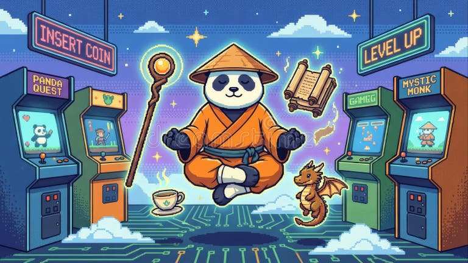

The 8-bit Nostalgia Critique proves that gameplay is king.Even with limited pixels, the vibrant colors and sharp sprites create a world more memorable than modern 4K graphics.
Every blocky movement feels intentional, reminding us that true art thrives within limitations.Beyond the flickering screens lies a legacy of hyper-efficient code and creative problem-solving.
While modern titles rely on raw power, these 8-bit gems used every byte of their 2KB RAM to weave digital magic, proving that a masterpiece doesn't need millions of polygons to capture the imagination.
8-bIT NOSTALGIAN CRITIQUE GAME remain legendary because great gameplay is timeless